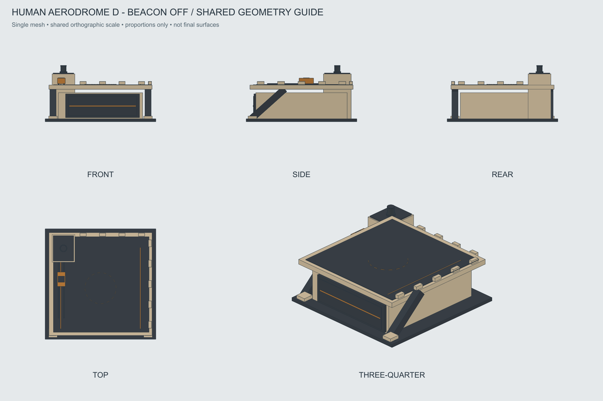

Аэродром · D «Консоль»
Утверждён с вращающимся сигнальным маячком на крыше заднего блока. Поднятая палуба и сервисная каретка сохранены.
Паспорт моделирования · Входы для AI · Движение и свет · OBJ · История A–H
Утверждённый нейтральный вид
Маячок выключен. Тёмный колпак и отражатель моделировать отдельно от светового эффекта.

Пять нейтральных художественных ракурсов

Строгие проекции одной геометрии
Грубый каркас задаёт расположение масс и частей. Подробные оболочки смотреть на основном виде.

Отдельное превью рабочего эффекта
Вид маячка сверху, увеличено. Янтарный сектор вращается вместе с внутренним отражателем; колпак и основание неподвижны. Это условная схема, не вход для текстурирования.
Работа соответствует прогрессу общей очереди. Отмена выключает свет и возвращает механизм в покой. Точные скорость, яркость и переходы ещё настраиваются; выпуск авиации — отдельное событие без добавленной задержки.